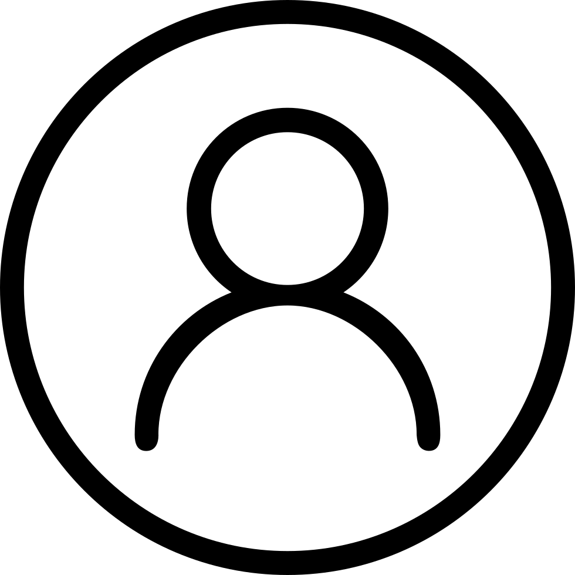

<mat-sidenav-container class="sidenav-container">
  <mat-sidenav #drawer class="sidenav" fixedInViewport [attr.role]="(isHandset$ | async) ? 'dialog' : 'navigation'"
    [mode]="(isHandset$ | async) ? 'over' : 'side'" [opened]="(isHandset$ | async) === false">
    <mat-toolbar>Electronic-Shop</mat-toolbar>
    <mat-nav-list>
      <a mat-list-item href="#" routerLink="/admin/">
        <mat-icon>inventory</mat-icon>
        Inventario
    	</a>
      <a mat-list-item href="#" routerLink="/admin/add-product">
        <mat-icon>add</mat-icon>
        Crear Producto        
   		</a>
       <ng-container *ngIf="user.role == 'Administrador'">
        <a mat-list-item href="#" routerLink="/admin/users">
          <mat-icon>people</mat-icon>
          Usuarios
        </a>
        <a mat-list-item href="#" routerLink="/admin/add-user">
          <mat-icon>person_add</mat-icon>
          Añadir usuario
        </a>
       </ng-container>             
    </mat-nav-list>
  </mat-sidenav>
  <mat-sidenav-content>
    <mat-toolbar color="primary" class="toolbar">
      <button type="button" aria-label="Toggle sidenav" mat-icon-button (click)="drawer.toggle()"
        *ngIf="isHandset$ | async">
        <mat-icon aria-label="Side nav toggle icon">menu</mat-icon>        
      </button>

      <span></span>
      <div class="user_info">
        <p>{{ this.user.username }}</p>
        <div class="user_image">
            
        </div>
        
        <button class="logout_button" mat-flat-button (click)="logOut()">
          <mat-icon>logout</mat-icon>
        </button>
      </div>
    </mat-toolbar>
		<div class="contain">
			<router-outlet></router-outlet>
		</div>    
  </mat-sidenav-content>
</mat-sidenav-container>

